Installing Simple Voice Chat
If you have never installed mods before, or need a refresher, here are some instructions, just select the launcher of your choice.
Installation Instructions:
- Head to fabricmc.net and download the latest fabric installer and run it.
-
Ensuring the Minecraft Launcher is closed, and that the selected Minecraft version (underlined
in red) is correct, hit install.
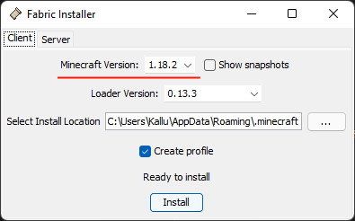
-
If all goes well, a success message like this will be shown. Dismiss it, close the installer,
and open the Minecraft Launcher.
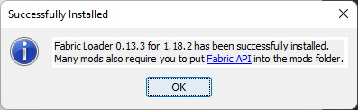
-
Under the "Installations" tab in the Minecraft Launcher (underlined in blue), you should see a
new install called something like
fabric-loader-MC.VERSION.NUMBER. This name is a bit ugly, so hit the button with 3 dots, then edit, and give it a nicer name, and hit save.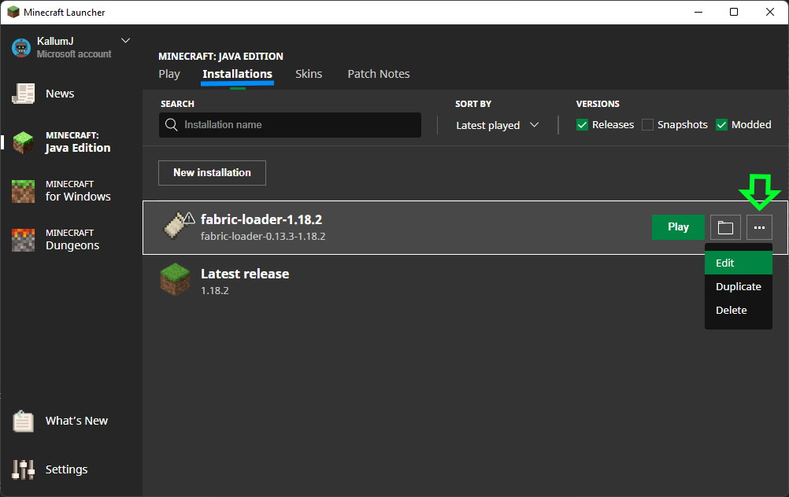 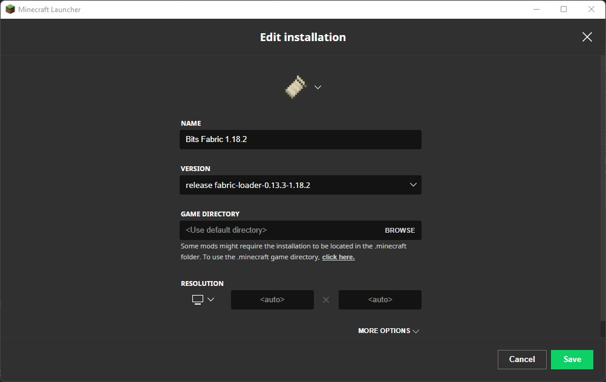 -
Again in the "Installations" tab, click the open folder button (boxed in blue)
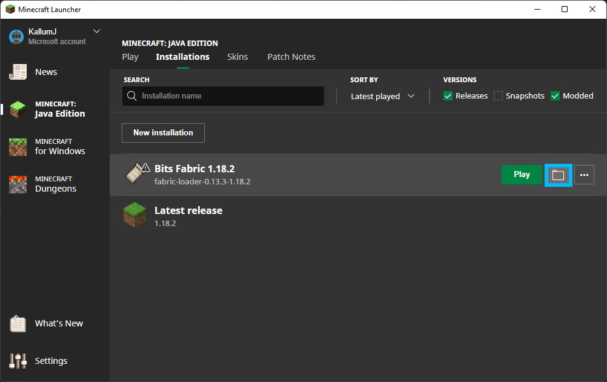
-
If it doesn't exist already, create a folder in the folder that got opened called
mods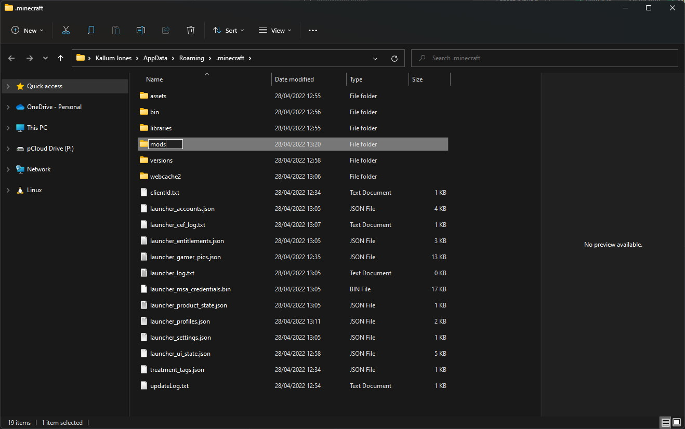 -
Drag your download for Simple Voice Chat into the
modsfolder. NOTE IF YOU ALREADY HAD A MODS FOLDER: if you already had a mods folder, you may already have other mods installed. These mods will need to be Fabric mods, and work with whatever version your trying to play. If they are incompatible, remove them.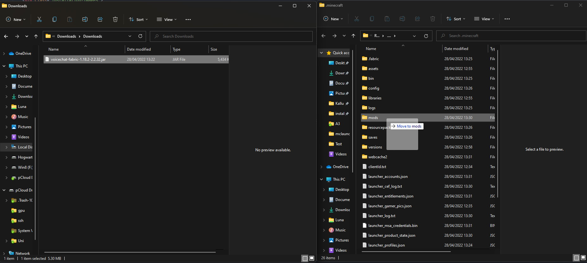 -
Ensuring that the installation we just set up is selected in the installation selector
(highlighted in blue), hit play.
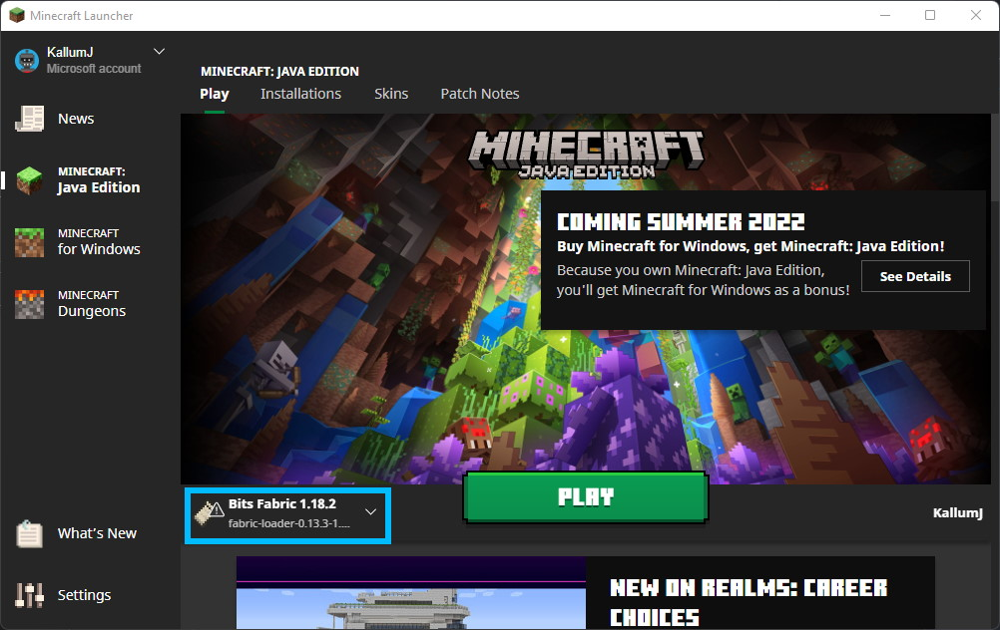
-
Finally, dismiss this safety message. It's nothing to worry about. It's just Mojang warning they
can't gurantee safety features like player muting will work (they will :D). Thats all! Now
Simple Voice Chat is installed!
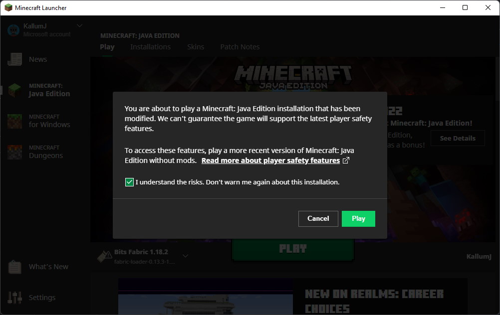
-
You can verify you installed everything properly by loading up a world and pressing the
Vkey. It should bring up this settings menu for Simple Voice Chat, confirming everything worked!
-
Select the Minecraft instance you want to install the mod to, and press "Edit Instance"
(highlighted in blue).
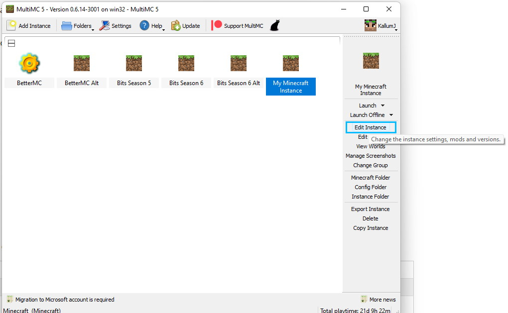
-
In the window that pops up, press "Install Fabric" (highlighted in blue).
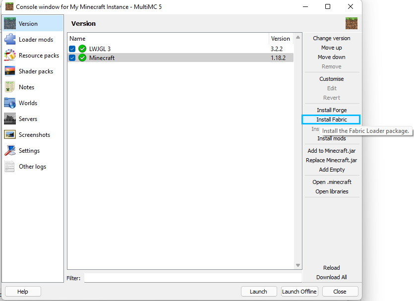
-
In the window that pops up, ensuring the starred version is selected, hit "Ok".
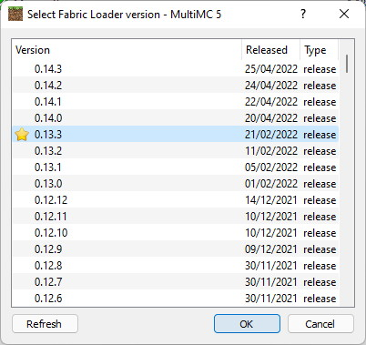
-
Click "Open .minecraft" (highlighted in blue)
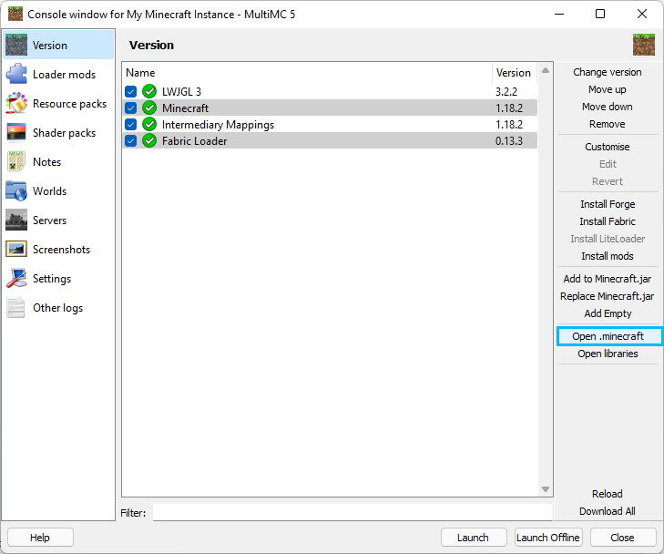
-
Drag your download for Simple Voice Chat into the
modsfolder.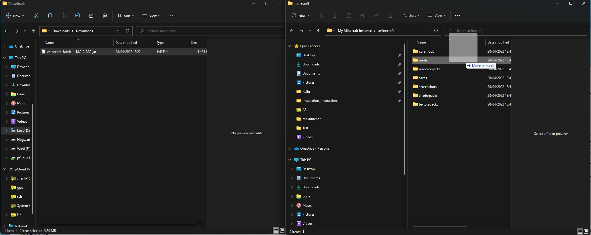 - Thats it! Launch your instance, and it now has Simple Voice Chat installed!
-
You can verify you installed everything properly by loading up a world and pressing the
Vkey. It should bring up this settings menu for Simple Voice Chat, confirming everything worked!
If you have played modded Minecraft recently, chances are you have used Curseforge to download your modpacks. Curseforge can also be used to manage "vanilla" installations, so here are some instructions if you want more of a "1-click-experience."
-
Click "Create Custom Profile" (highlighted in blue).
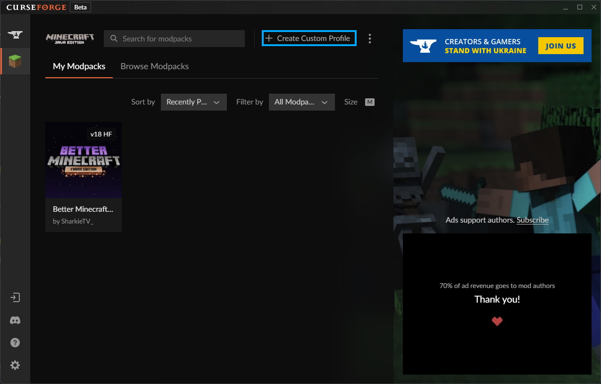
-
Give your profile a nice name, ensure the Minecraft version (highlighted in red) is correct, and
change the "Game Type" toggle to "Fabric" (highlighted in blue), and press create.
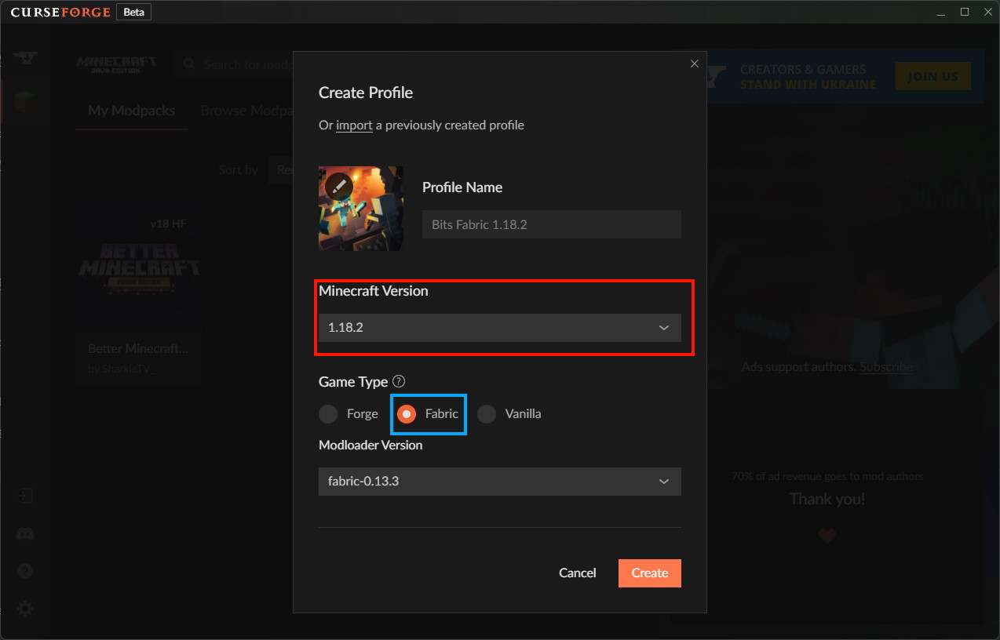
-
Right click the profile you created, and select "Add More Content" (highlighted in blue).
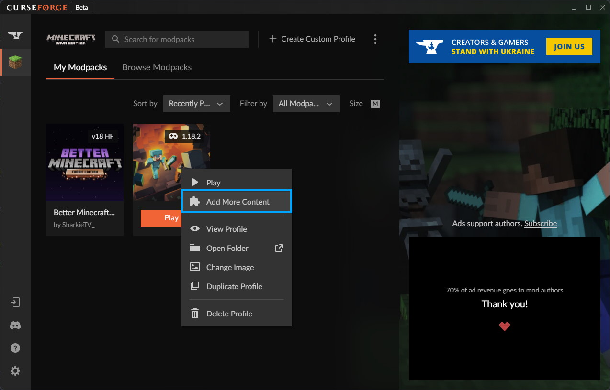
-
Search
Simple Voice Chatin the search bar, and hit install on the mod by henkelmax, highlighted in blue below.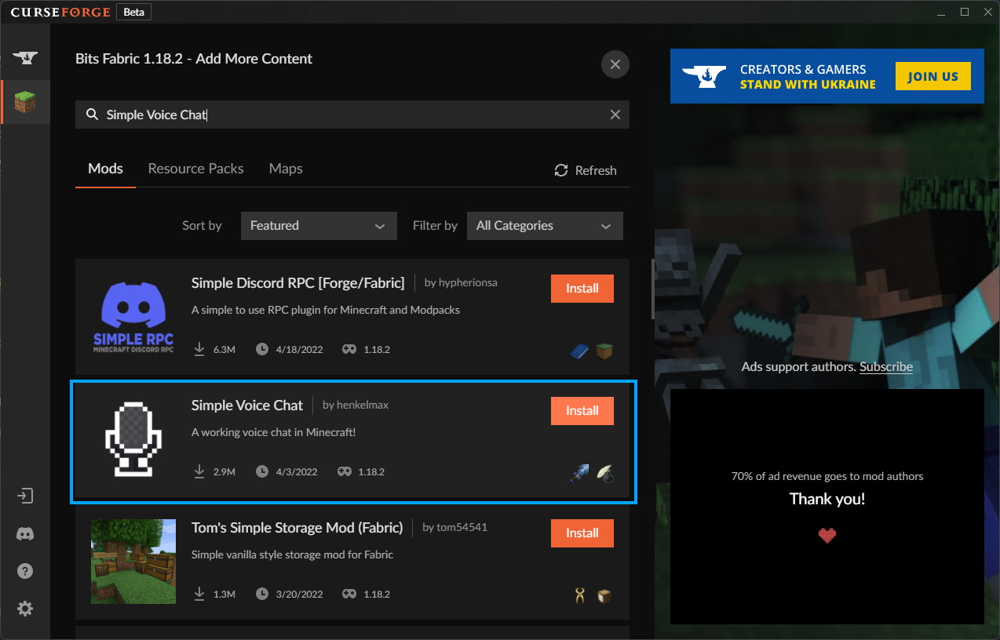 - Thats it! Launch your profile and you'll now have a Minecraft instance with Simple Voice Chat installed!
-
You can verify you installed everything properly by loading up a world and pressing the
Vkey. It should bring up this settings menu for Simple Voice Chat, confirming everything worked!
If you hit any issues, feel free to DM us and we can help you out!